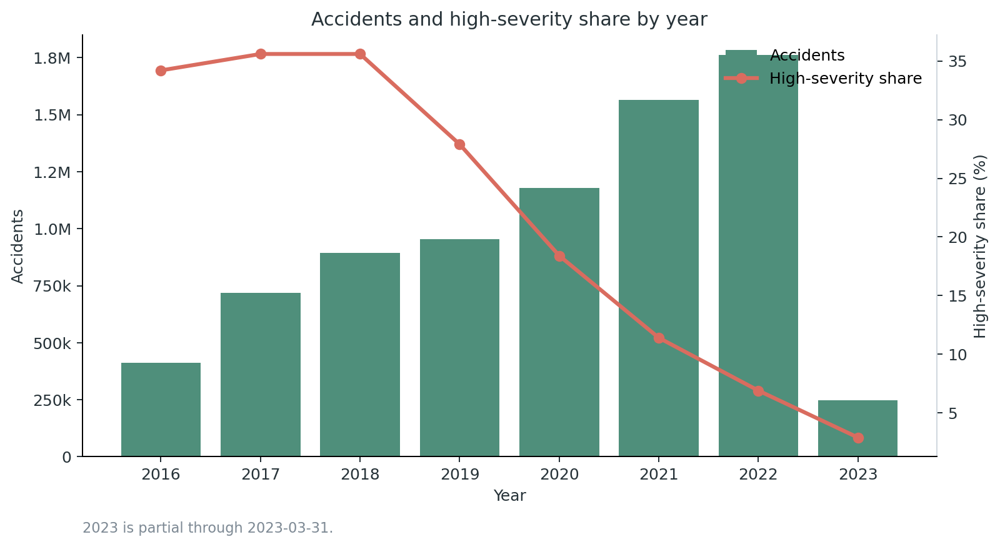
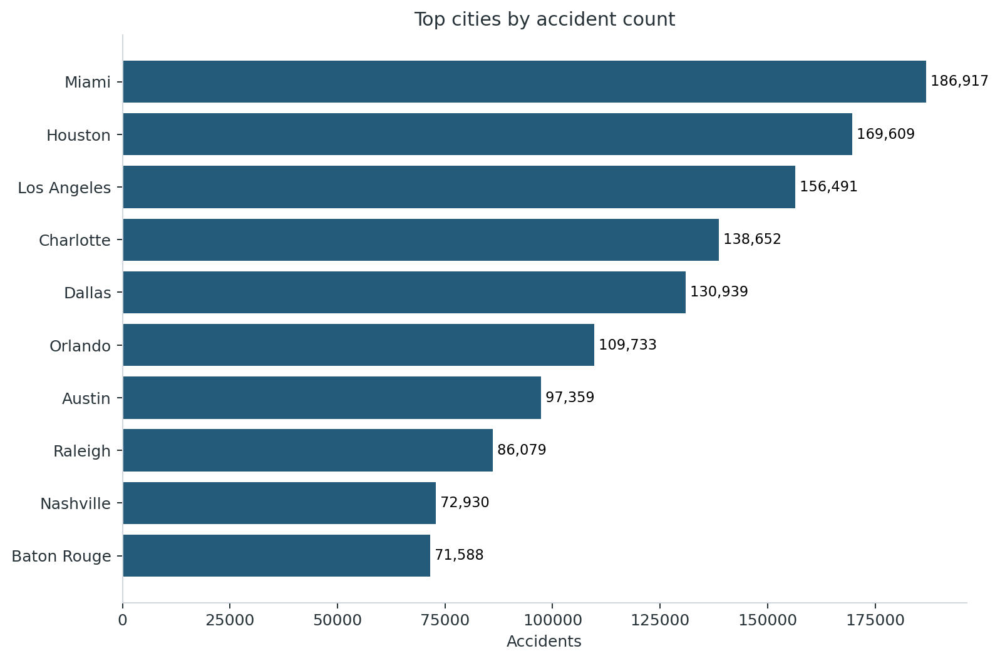
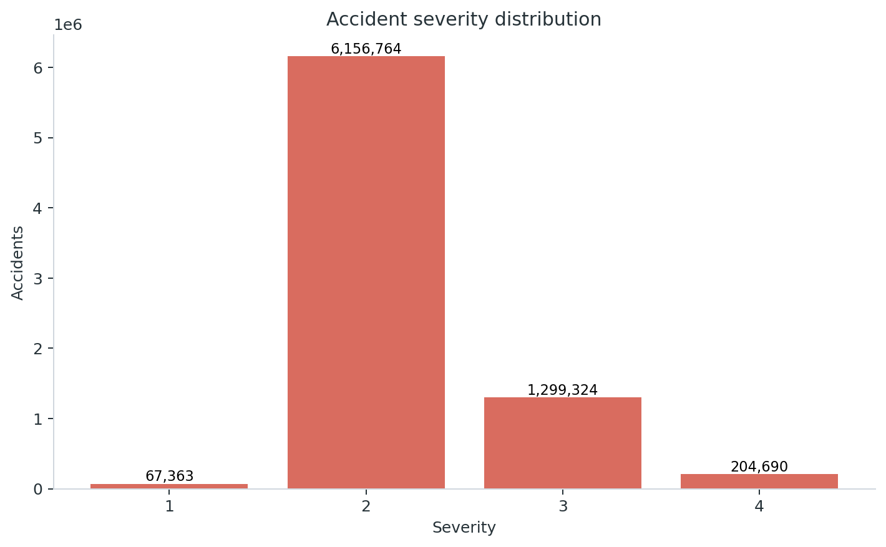
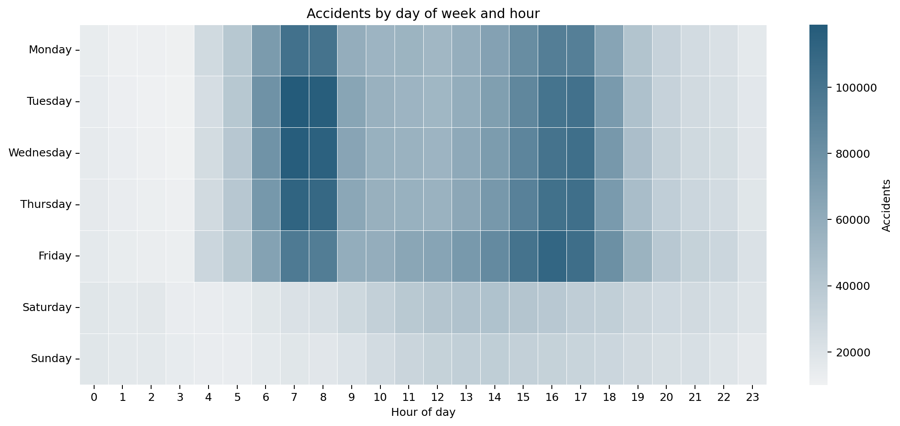
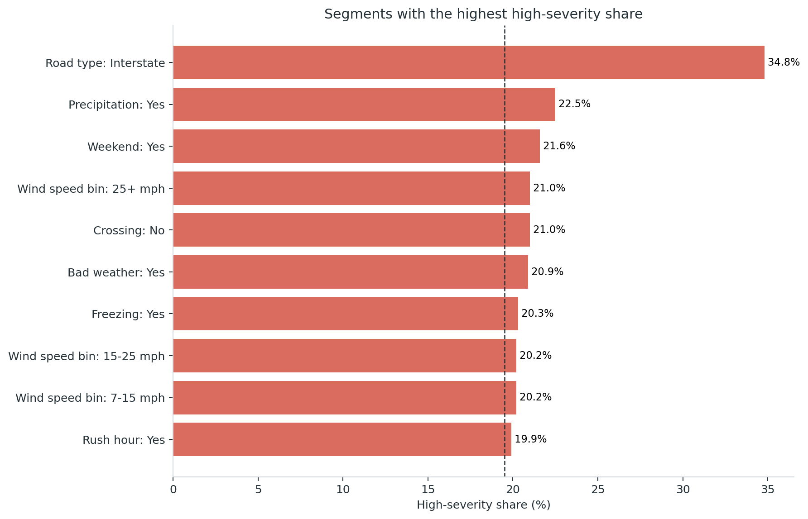
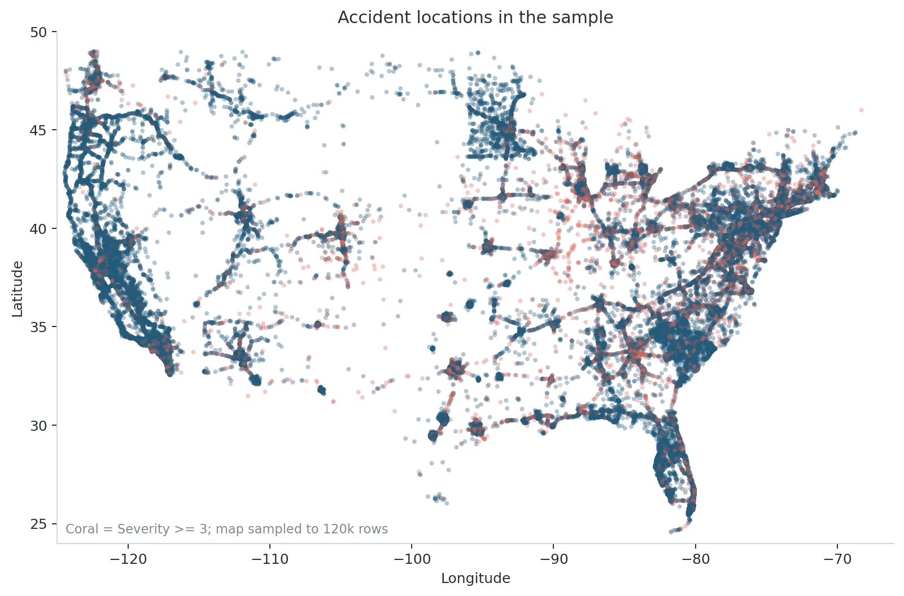

Yearly trend

Generated from the full dataset. Built to make the analysis reviewable without opening Python.
2023 is partial through 2023-03-31.






| City | Accidents |
|---|---|
| Miami | 186,917 |
| Houston | 169,609 |
| Los Angeles | 156,491 |
| Charlotte | 138,652 |
| Dallas | 130,939 |
| Orlando | 109,733 |
| Austin | 97,359 |
| Raleigh | 86,079 |
| Check | Value | Note |
|---|---|---|
| Rows after cleaning | 7728141 | Rows available for analysis |
| Columns after cleaning | 38 | Columns retained for analysis |
| Duplicate IDs | 0 | Should be 0 |
| Invalid severity values | 0 | Expected values are 1-4 |
| Rows with invalid state code | 0 | Useful for catching shifted CSV fields |
| Rows with non-US country value | 0 | Usually a parsing or sample-quality issue |
| Rows outside continental-US coordinate bounds | 0 | Loose coordinate sanity check |
| Missing values: Precipitation(in) | 28.5% | Top missing-value columns |
| Missing values: Wind_Speed(mph) | 7.4% | Top missing-value columns |
| Missing values: wind_speed_bin | 7.4% | Top missing-value columns |
| Missing values: Visibility(mi) | 2.3% | Top missing-value columns |
| Missing values: Weather_Condition | 2.2% | Top missing-value columns |
| Missing values: Temperature(F) | 2.1% | Top missing-value columns |
| Missing values: Sunrise_Sunset | 0.3% | Top missing-value columns |
| Missing values: Street | 0.1% | Top missing-value columns |